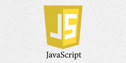
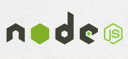
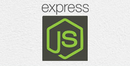

A fresh graduate seeking an entry-level position to gain practical experience
and expand my learnings, knowledge and skills in the field of information technology (IT).
Technical Skills
Web Development

 
Programming
Only basic concepts.
Database
Multimedia
Adobe Photoshop CS6
Adobe Flash
Adobe Premiere
CyberLink PowerDirector
Education
Bachelor of Science in Information Technology (June 2015 – May 2019)
Polytechnic University of the Philippines
Sta. Mesa, Manila
Academic Experiences
City Project Application and Beneficiary Releasing Management System (Nov 2017 – Oct 2018)
Web-based system developed using Nodejs/Expressjs/Bootstrap
Role: Project Manager, System Analyst, Back-end Developer, Technical Documentation Writer
ChurchToGo (Jun 2017 - Oct 2017)
Church Reservation system developed using Nodejs/Expressjs/Bootstrap
Role: System Analyst, Back-end Developer, Technical Documentation Writer
Irrregular Please! (Nov 2017 – Mar 2018)
Student Portal for irregular students developed using Nodejs/Expressjs/Bootstrap
Role: Project Manager, System Analyst, Back-end Developer, Technical Documentation Writer
Achievements/Responsibilities
Congressman Neptali A. Gonzales Scholar (2015-2019)(Mandaluyong City)
Civil Service Sub Professional Examination Passer (March 2018)
TESDA - Web Development Course (July 31, 2019 - August 22, 2019)
Pre-Professional Experience
IT Intern – Research and Development Department
Philippine Center For Advanced Maritime Simulation And Training, Makati Office (Dec 2018 – Mar 2019)
Provided help in maintenance of system units used in training rooms as well as creating Front-end design for scheduling system using VB.NET.